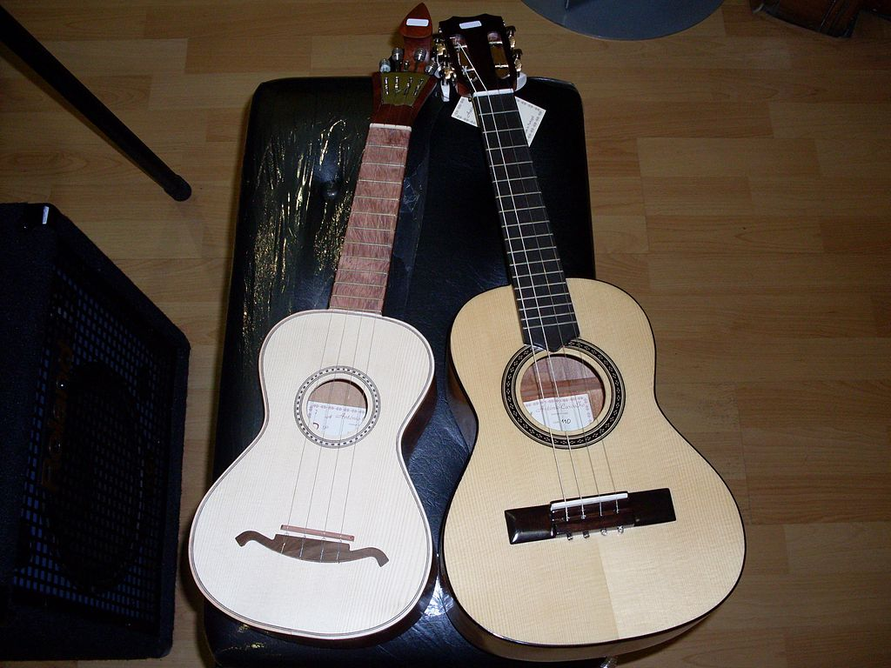

Go Back to the main page.
Some call it the prisoners instrument, supposedly one can play it with handcuffs on!

Cavaquinho - By TenInslands - Wikipedia Commons
It's amazing that
only four strings
can produce such and amazing sound.
Checkout this video for a little taste:
More information on Wikipedia: